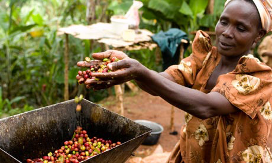

<article>
<div role="main" id="main">
		<div class="wrapper">
		
			<!-- page-content -->
			<div class="page-content portfolio-content">
				
				<!-- entry-content -->	
	        	<div class="entry-content cf">
	        		
						
					<h2>All You Need to Know About Coffee</h2>	
	        		<!-- project content -->
	        		<div class="project-content">
		        		<p>Coffee trees produce their best beans when grown at high altitudes in a tropical climate where there is rich soil.  Such conditions are found around the world in locations along the Equatorial zone, between latitudes 25 degrees North and 30 degrees South.</p>
    
<p>Besides location, other factors affect the quality and flavor of coffee. These include the variety of the plant, the chemistry of the soil in which it is grown, the weather, particularly the amount of rainfall and sunshine, and the precise altitude at which the coffee grows. Such variables -- combined with the way the cherries are processed after being picked -- contribute to the distinctions between coffees from countries, growing regions and plantations worldwide. The combination of factors is so complex, that even from a single plantation one finds variation in quality and taste.</p>

<p>Coffee is grown in more than 50 countries around the world. </p>
		        		</p>
	        		</div>
	        		
				<div class="c-1"></div>
				<div class="c-2"></div>
				<div class="c-3"></div>
				<div class="c-4"></div>
			</div><!-- ENDS page-content -->
			


<body>
<!--Body Copy-->    
<div class="unit unit-s-1 unit-m-1 unit-l-1">
	<div class="unit-spacer">
		<!---->
    	

	</div>
</div>

<div class="unit unit-s-1 unit-m-1 unit-l-1">
	<div class="unit-spacer">
		<h2>News</h2>
        	<h3>ABOUT COFFEE</h3>
			<p>Everyone recognizes a roasted coffee bean but unless you have lived or traveled in a coffee growing country, you might not recognize an actual coffee tree.   Pruned short in cultivation, but capable of growing more than 30 feet high, a coffee tree is covered with dark-green, waxy leaves growing opposite each other in pairs.  Coffee cherries grow along the tree's branches.  It takes nearly a year for a cherry to mature after the flowering of the fragrant, white blossoms.  Because it grows in a continuous cycle, it is not unusual to see flowers, green fruit and ripe fruit simultaneously on a single tree. The trees can live as long as 20 - 30 years and are capable of growing in a wide range of climates, as long as there is no harsh fluctuation in temperature.  Optimally, they prefer a rich soil and mild temperatures, with frequent rain and shaded sun. 

</p>

			<h3>ORIGIN</h3>
            <p>In the Ethiopian highlands, where the legend of Kaldi, the goatherd, originated, coffee trees grow today as they have for centuries. Though we will never know with certainty, there probably is some truth to the Kaldi legend.</p>

<p>It is said that he discovered coffee after noticing that his goats, upon eating berries from a certain tree, became so spirited that they did not want to sleep at night.</p>

<p>Kaldi dutifully reported his findings to the abbot of the local monastery who made a drink with the berries and discovered that it kept him alert for the long hours of evening prayer.  Soon the abbot had shared his discovery with the other monks at the monastery, and ever so slowly knowledge of the energizing effects of the berries began to spread.  As word moved east and coffee reached the Arabian peninsula, it began a journey which would spread its reputation across the globe.</p>

<p>Today coffee is grown in a multitude of countries around the world. Whether it is Asia or Africa, Central or South America, the islands of the Caribbean or Pacific, all can trace their heritage to the trees in the ancient coffee forests on the Ethiopian plateau.</p>
	</div>
</div>
 </article>       
